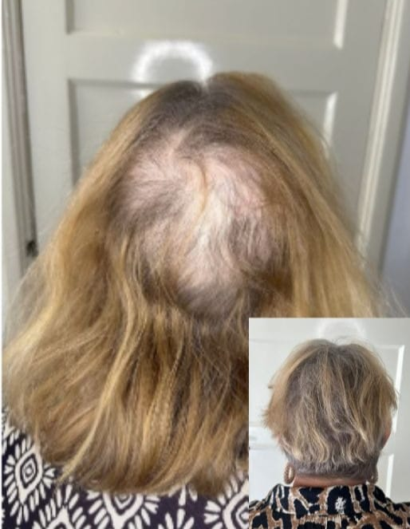
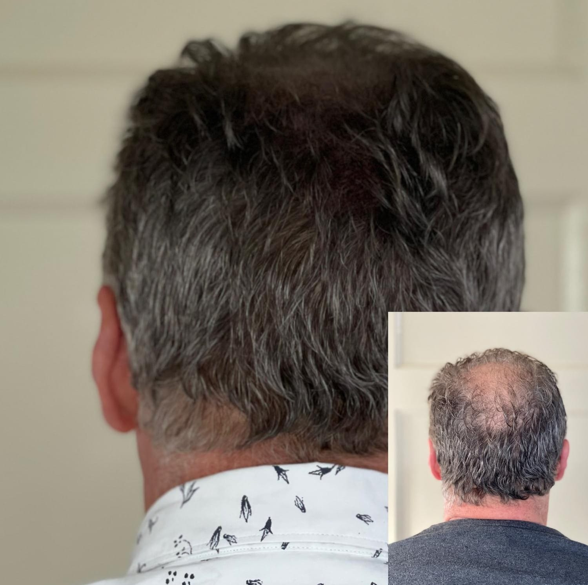

.jpg)
.jpg)
Dunner wordend haar? Kale plekken? Je hoeft je niet langer te verstoppen
Probeer je kale plekken te verbergen met haarstukjes, fibers of een pet? Houd je je hart vast als het waait of regent, bang dat je hoofdhuid zichtbaar wordt? Mijd je zwembaden en sauna’s om dezelfde reden?
Dat hoeft niet meer.
Met micro haarpigmentatie neem je jouw zelfvertrouwen terug. Een prachtige optische illusie van voller haar — zonder pillen, fibers of ingrijpende transplantaties.
.jpg)
Voor wie is micro haarpigmentatie geschikt?
Micro haarpigmentatie is er voor iedereen die worstelt met haarproblemen:
- Kale plekken op je hoofd of in je baard
- Dunner wordend haar waardoor je hoofdhuid zichtbaar wordt
- Littekens die door minder haardichtheid opvallen
- Volledige kaalheid door o.a. alopecia
- Ontevredenheid over een eerdere haartransplantatie
- Geen geschikt donorgebied voor een transplantatie
Wat jouw reden ook is: met micro haarpigmentatie creëer ik een natuurlijk ogende, vollere haardos — een optische illusie die jou weer laat stralen

